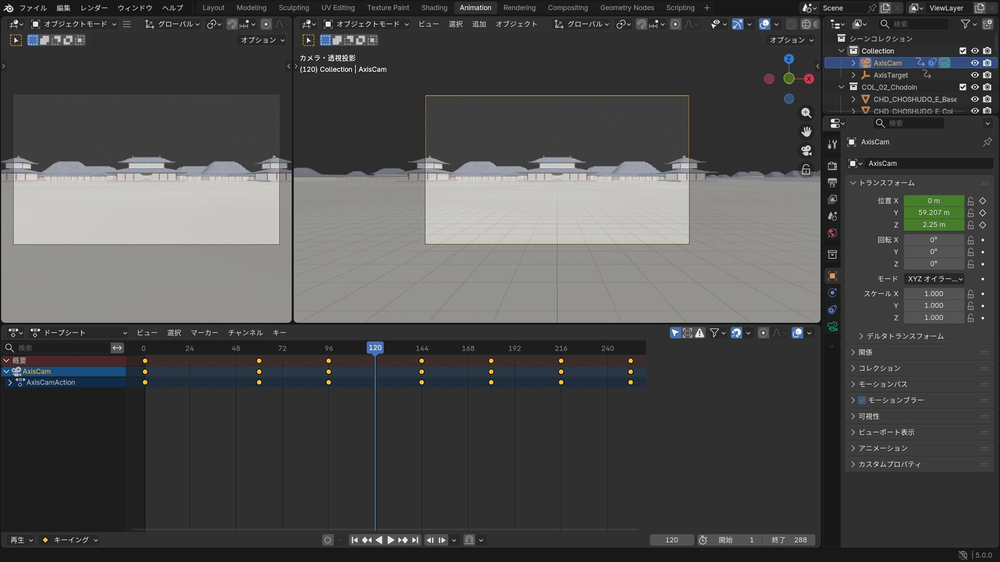
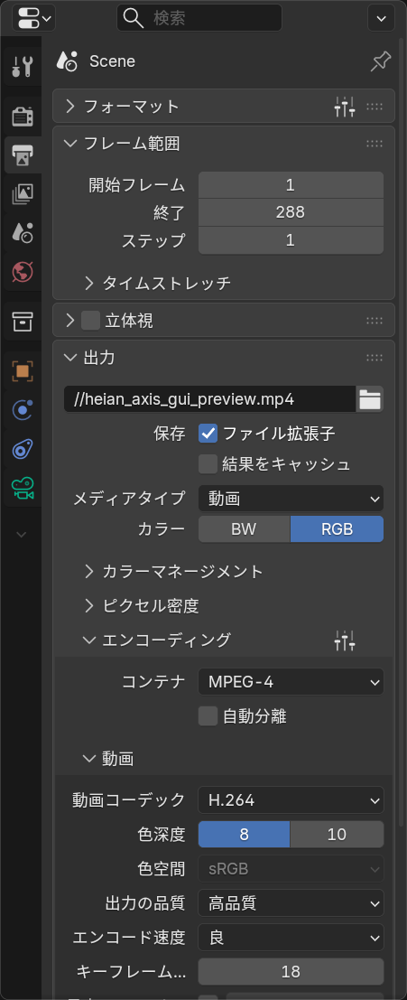
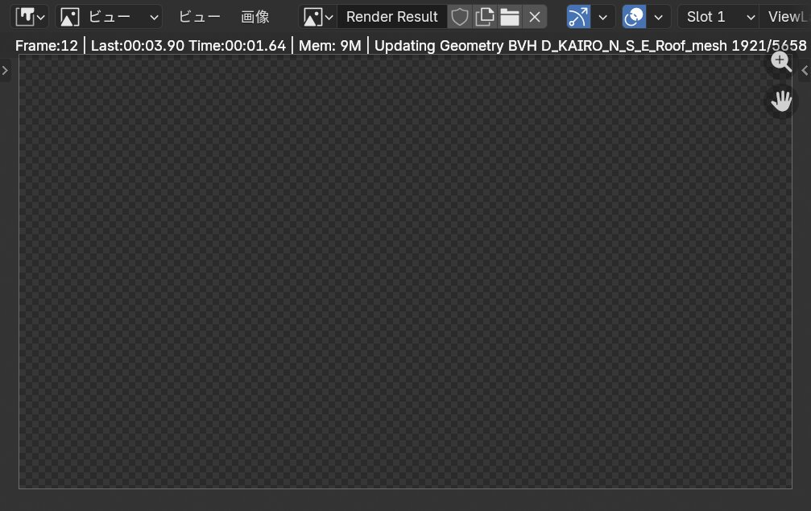
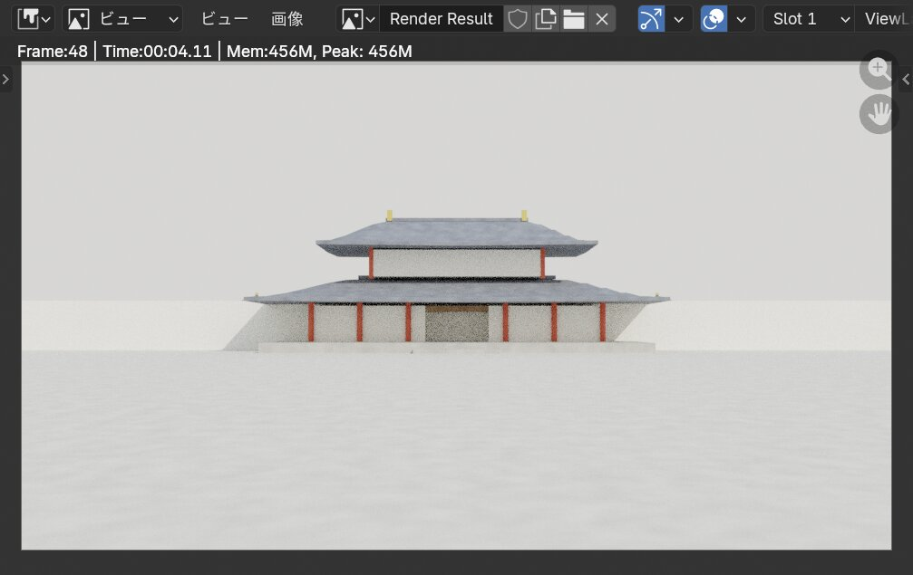
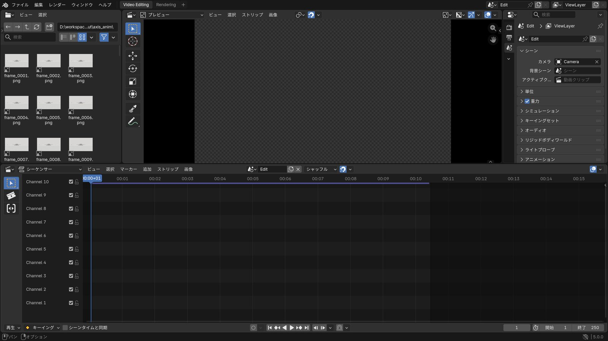
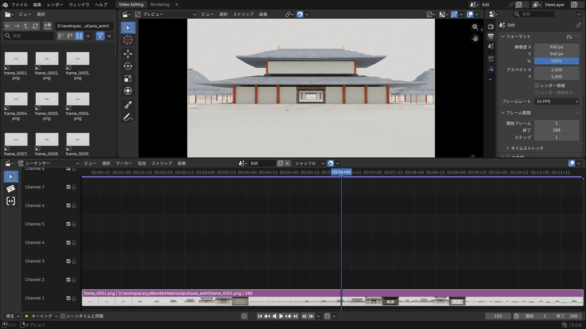
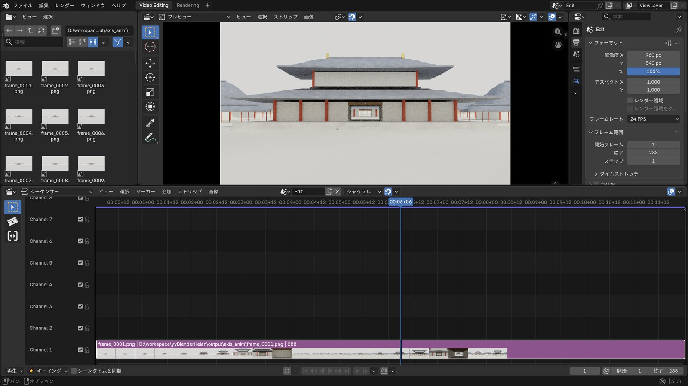
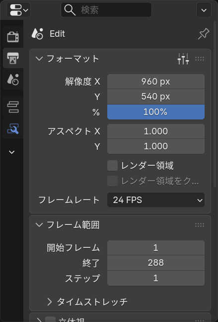
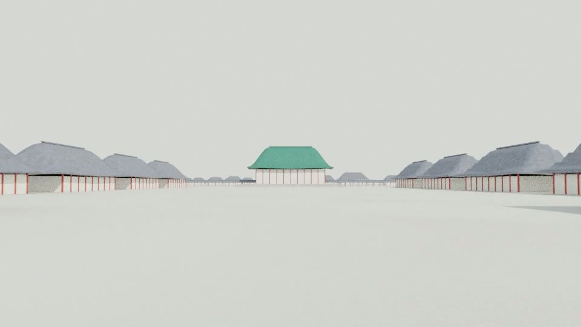

4. Blender の GUI で動画を作る
2章のステップ3で作った軸線動画用のファイルを開き、カメラの動きを確かめ・直し、mp4 として書き出します。後半では、描き終わった連番 PNG を Blender のビデオシーケンサーで mp4 にまとめる方法も扱います。
1. 動画用ファイルを開いてアニメーション画面にする
output/heian_daidairi_axis_anim.blendを開く。- 画面上部のタブから Animation ワークスペースに切り替える。
- アウトライナーで
AxisCam（カメラ）をクリックして選ぶと、下の ドープシート にキーフレーム（黄色の菱形）が並ぶ。

| 操作 | 方法 |
|---|---|
| 再生／停止 | Space |
| フレームを移動 | ドープシートやタイムラインの上をドラッグ。←→ で1フレームずつ、↑↓ でキーフレーム間を移動 |
| 最初／最後へ | Shift+← / Shift+→ |
| カメラ視点 | 3Dビューにマウスを置いてテンキー 0 |
再生がカクつくのは正常です。ソリッド表示にすると滑らかに確認できます。最終的な見た目は手順4のレンダリングで確かめます。
2. カメラの動きを直す
このファイルのカメラは 2 つのオブジェクトで動いています。
AxisCam：カメラ本体。位置にキーフレームが打ってある。AxisTarget：カメラが見る点（空のオブジェクト）。カメラには「トラック」コンストレイントが付いていて、常にこの点を向く。これにも位置のキーフレームがある。
- 直したいフレームに移動する（例：96フレーム目＝朱雀門の通過）。
AxisCamを選び、G で動かす（G → Z で上下だけ、G → Y で南北だけ）。または右のプロパティの 位置 に数値を入れる。- I キー（または位置の欄で右クリック → キーフレームを挿入）でキーフレームを打つ。既にキーがあるフレームなら上書きされる。
- 見る方向を変えたいときは
AxisTargetを同じように動かしてキーを打つ。 - ドープシートで菱形を選んで G で左右に動かすと、そのキーのタイミングが変わる。
門の通り抜け開口は地面から約1.0〜3.9mです。門を通るフレームでカメラの高さ（位置 Z）を上げすぎると屋根を突き抜けます。スクリプトでは 2.2〜2.6m にしています。
経路をまるごと作り直したい場合は、GUIよりスクリプトの KEYS を直す方が確実です（5章）。
3. 動画の出力設定
プロパティの 出力プロパティ（プリンターのアイコン）を開きます。

| 欄 | 設定 |
|---|---|
| フレーム範囲 | 開始 1、終了 288（12秒・24fps） |
| 出力（パス） | 例：//heian_axis.mp4。// は .blend と同じフォルダの意味 |
| メディアタイプ | 動画（Blender 5.0 で追加された項目。4.x 以前は「ファイルフォーマット → FFmpeg 動画」） |
| エンコーディング → コンテナ | MPEG-4 |
| 動画 → 動画コーデック | H.264（どの環境でも再生しやすい） |
| 出力の品質 | 高品質。ファイルを小さくしたいなら「中品質」 |
解像度は上の フォーマット 欄（この写真では折りたたみ中）で、スクリプトの設定は 960×540 です。フルHDにするなら 1920×1080 にします（描画時間は約4倍）。
レンダープロパティのデバイスが GPU演算 になっているかも確認してください（3章の手順6）。
4. アニメーションをレンダリングする
レンダー（Render）→ アニメーションをレンダリング（Render Animation）（Ctrl+F12）を選ぶと、別ウィンドウで1フレームずつ描かれ、指定したパスに mp4 が書き出されます。途中でやめるときは Esc。

Frame:（今描いているフレーム）、Last:（前のフレームにかかった時間）が出る。各フレームの描き始めは形状の準備（Updating Geometry BVH）のため、一瞬この市松模様になる。
長い動画は「連番 PNG → まとめて mp4」が安全：mp4 に直接書き出すと、途中で止まったときにそれまでの分が使えなくなることがあります。長時間のレンダリングは、メディアタイプを 画像（PNG） にして連番で描き（または scripts/render_axis_anim.ps1 を使い）、最後に次の手順でまとめるのがおすすめです。
5. 連番 PNG を Blender のビデオシーケンサーで mp4 にする
2章のステップ4や、上の方法で描いた output/axis_anim/frame_0001.png〜0288.png を1本の mp4 にします。3Dの再計算はしないので、数十秒で終わります。
- ファイル（File）→ 新規（New）→ ビデオ編集（Video Editing） で動画編集用の新しいファイルを作る。

ビデオ編集の初期画面。左上がファイルブラウザー、右上がプレビュー、下がシーケンサー（タイムライン）。 - 下のシーケンサーで 追加（Add）→ 画像／連番（Image/Sequence） を選び、
output/axis_animフォルダを開いて A で全フレームを選び、画像ストリップを追加 を押す。 - 出力プロパティで、解像度を連番と同じ 960 × 540、フレームレートを 24 fps、フレーム範囲を 1〜288 にする（ストリップの長さに合わせる）。
- 出力のパスを決め、メディアタイプ 動画・コンテナ MPEG-4・コーデック H.264 にする（手順3と同じ）。

288枚の連番を1本のストリップとして置いたところ。プレビューに今のフレームが映る。 - レンダー → アニメーションをレンダリング（Ctrl+F12）で mp4 が書き出される。

書き出しが終わったところ。この例では output/heian_axis_12s.mp4（960×540・24fps・288フレーム・12秒）ができた。


ビデオ編集の初期設定では音声コーデックが AAC になっていて、無音の音声トラックが付きます。不要なら出力プロパティの エンコーディング → 音声 でコーデックを「なし」にします。
ビデオ編集のファイルはカラーマネジメントのビュー変換が 標準（Standard） になっています。連番 PNG はすでに Filmic で仕上がった色なので、このままで色が変わりません。ここを Filmic などにすると二重にかかって色が薄くなります。
シーケンサーでは、タイトル文字（追加 → テキスト）、フェード（ストリップを選んで 追加 → フェード）、BGM（追加 → サウンド）も足せます。
6. 下書きを速く作る：ビューポートレンダー
構図やタイミングだけを確かめたいときは、3Dビューの ビュー（View）→ ビューポートでアニメーションレンダリング（Viewport Render Animation） を使うと、今の表示（ソリッドやマテリアルプレビュー）のまま数十秒で動画にできます。出力設定は手順3と同じものが使われます。